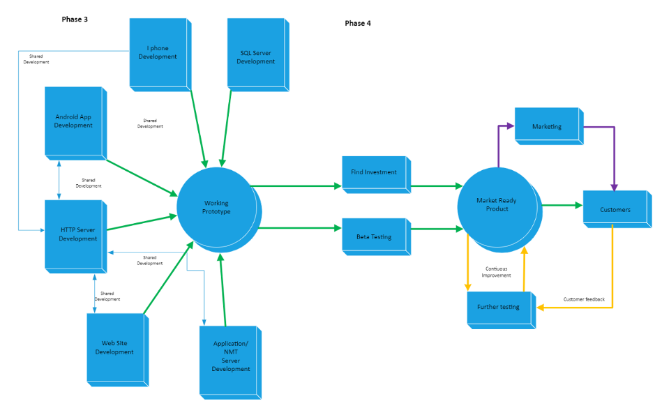
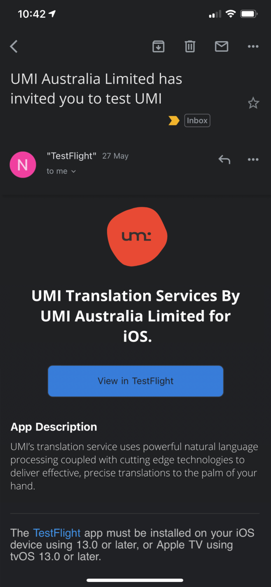

The UMI project primarily aims to broker connections between multicultural communities by eliminating language barriers to new and localised culinary experiences. As local populations increasingly reflect a globalised world, cross-cultural relatability and sensitivity become ever more critical to maintaining communal integration and hegemony. Studies show that culture experienced through cuisine forms stronger ties of cross-culture relatability, connecting people from many backgrounds to enjoy exotic foods and new culinary experiences. (Zafari et al. 2015, p565).
For this project to be a success, UMI has devised a four-phased approach to achieving the end goal. The project's overall aim is to produce a market-ready application to launch at the end of phase four, scheduled for February 8th, 2022. The first two phases are research-based, in which the business will investigate the feasibility and marketability of the application. In phase 3, UMI will look at prototyping the app. In phase four, the business will perfect the application and begin the marketing and feedback gathering to ensure a successful launch.
To better understand UMI's user-base potential and scope of applications into the future, a thorough analysis of existing translation service providers is essential. The business must identify potential market gaps and pain points in competitor offerings to render a superior service to a wide variety of demographics.
In-depth competitor analysis will impart significant insight into supply and demand and inform the development of additional features. This data will prepare UMI to meet future market trends and reduce the risk of competitor innovation blindsiding the business (Bergen & Peteraf 2002; Lee, 2021).
Perhaps the most widely used translation application is Google Translate, with over 100 billion words translated by 500 million people each day (Aiken, 2019). Accessible between three different platforms (a web platform, Apple iOS application, and Android application), the application supports 103 different languages, 52 of which function in an offline capacity (Google Cloud, 2021). Through “deep learning” via a neural machine translation premise, Google Translate compares whole sentences against a vast range of sources and contexts to determine the most relevant, grammatically correct, and human-like translation (Sommerlad, 2021; Turovsky, 2016).
Across a spate of metrics measuring translation accuracy and human comprehension, research shows Afrikaans is the most accurately translated language, followed by German and Portuguese, where the quality is considered nearing human-like translation. Other languages, such as Malaysian, Hindi, and Thai, have higher rates of failure or mistranslation (Aiken, 2019), whilst other studies note Bengali, Haitian Creole, and Tajik prove difficult for Google Translate to interpret (Tirosh, 2018). The application can translate spoken inputs and instant messages. It also reads and decodes handwritten characters and AR functionality to translate physical signage, packaging, and documents (Google Cloud, 2021). Additionally, Google Translate offers AutoML Translation services for developers and translators, and Translation API software for document translation processing (Google Cloud, 2021), a technology likely utilised by UMI translation services.
As an industry-specific service, UMI's primary differentiation strategy is to overcome the barriers traditionally experienced during person-to-person interactions and develop a nuanced, culturally appropriate translation of menu items that accommodates food alterations and billing procedures. The application will cater to non-native speakers and foreign travellers, as well as those interested in learning a new language or culture through the experience of dining.
Another popular translation application is iTranslate. Functioning similarly to Google Translate, iTranslate offers a multitude of products and platforms, from their free, standardised translator application iTranslate (iTranslate, 2021), to their subscription-based suite of products. iTranslate's Converse application supports thirty-eight commonly spoken languages for person-to-person conversation (iTranslate Converse, 2021), iTranslate Lingo supports fourteen languages designed for language learning (iTranslate Lingo, 2021), and iTranslate Keyboard provides a translation extension for keyboards and typing functionality (iTranslate Keyboard, 2021).
Additionally, iTranslate offers enterprise-specific solutions focused on medical and law-enforcement fields with tailored and custom-built applications (iTranslate Enterprise Solutions, 2021) and access to their API technology (iTranslate Translation API, 2021). A 2017 study into iTranslate voice recognition translation accuracy from English to Spanish and Chinese Mandarin showed comparable quality to human translators on simple to medium difficulty sentences, with more complex and longer sentences drawing more errors (Chen, Acosta & Barry, 2017). In its current iteration, UMI plans to develop a single product for document translation to augment the communicative relationship between hospitality businesses and their non-native speaking customer base, thus increasing accessibility for customers to a broader range of hospitality businesses and products. Further iteration on document translation services could expand to healthcare, legal, and government services.
Our project aims to have a market-ready translation application to be used in restaurants around the world. To achieve this, we have broken up our project into 4 phases. Each phase will have goals and deliverables required to pass to the next phase.
Phase 1 was the planning phase, where we decided on an application and investigated the tools and technology to deliver it. Phase 2 is the sales phase. We are refining our application based on feedback, creating a video outlining the business objectives, and creating deliverables that ensure our product looks marketable. Phase 3 is the prototype phase, in which we will secure the infrastructure needed to build the app, write the code and create a working application—one that can translate! Finally, phase 4 is the test and release phase. We will beta test the prototype during this phase and receive feedback on improvements and bugs in the software. Beyond this, we will begin marketing the product, releasing a limited number of preview versions, and establishing a continuous improvement model to ensure that the app is as good as it can be when released on 8th February 2022.
Our first goal for phase 1 was to produce a comprehensive written report including a complete description of the application, the motivations behind it, and the tools and technology needed to bring it to life. The report will ensure that we have all the relevant information in one place to move to phase 2 of our plan.
Another phase 1 goal is to have a functional website dedicated to the project. This website will reflect the information contained in the report. The website is an essential step in our project, as it allows us to share our ideas with the world, bring on investors, and be our first steps in marketing the product.
In phase 2, the first goal is to write up a second report. This report will provide more nuance and detail regarding the planned operation and incorporation of feedback received during the rollout of the phase 1 report. This report is crucial as it allows us to refine our plans and our product and demonstrate significant growth in the project.
We will produce an informational video for the completion of phase 2. The video will include a description of the application, its motivations and objectives, and how our application differentiates from other translation services. The video is an important marketing tool and is available to send out to investors and other relevant stakeholders.
Phase 2 will require the team to create a model of how the application will look on a user's device. The process will involve using Figma to provide an interactive interface prototype. The model is another critical step in showing relevant stakeholders and potential customers how the app will look and feel upon release.
The primary goal for phase 3 will be to have a working prototype by completion. The process will involve procuring the needed infrastructure and completing the development to run working translations. Prototype completion is crucial as we need the application to function adequately to begin testing and further secure funding for testing and marketing.
By the end of phase 4, we will need to have a tested and working application ready for market. We will need to complete beta testing and fix any bugs or issues to ensure we can launch the application at a professional standard. Market launch is essential, as we will need to start generating income beyond the launch to pay back investors and ourselves.
By the end of phase 4 of the project, we should have a comprehensive ongoing marketing plan. Marketing will involve having detailed digital marketing strategies and ongoing customer engagement. After launch, we must know how we will grow the business and have documented plans to showcase our application to the world.
Our final goal for the end of phase 4 is to institute a continuous improvement plan. Continuous improvement ensures that all customer feedback can be stored, collated, and acted upon promptly. This is important as our application exists in a competitive landscape, and continuous improvement is the only way we can stay ahead of any potential future competitors.
The first iteration of our project was a language translation application that could translate messages between people using Near Field communications. Customers would download the application onto their mobile devices and exchange messages to communicate across language barriers. Our early design work involved having an application available for both Android and Apple but using a standard back-end design.
The end-user will download the application onto their device (or load the web page if on a computer), where the application will prompt them to log in or create a new account. Once logged in, the user can submit text or documents they wish to translate into another language.
The application will send uploaded documents to the webserver through the Hypertext transfer protocol (HTTP) server. The web server will then send the documents to the application server, converting, via an API, into SQL data stored onto the user database.
The application will then convert the document into text and send it to the NMT server to translate. The NMT server will use wordnet databases in both the original and target language. The translated text will then return to the application server to convert back into a document. It will be stored on the user database and will be available to the user for future use.
The user can then share the message with anyone they wish, in any language they wish. In addition, the app supports the use of Near Field Communication (NFC) to exchange information between users. So, for example, if a user has a document or message they wish to share with another user in a different language, they can submit the original document to the app and then share a link to the second user through NFC. The second user will send a request to the application server, which pulls the original text, passing it to the NMT server for translation. The translated text is subsequently returned to the second user via the web server HTTP link to their device.
However, after conducting preliminary primary market research (interviewing family, friends, and co-workers), it was concluded that requiring strangers to tap their phones together in circumstances where they could not communicate would be difficult. There are both real and perceived security threats; the theft of data and cultural misunderstandings would make things particularly difficult. The group decided this would not be a marketable product in the real world.
The team unanimously concluded that the original idea would need to pivot to create a marketable solution. The group met and floated many ideas, including weighing the possibility of entirely changing the project idea. Nevertheless, the group decided that the original idea, although flawed, had merit, not to mention the considerable research and work the team had invested into this idea. After some collective spit balling, the team decided to proceed with an idea to modify the app to service the hospitality industry. The assumption was that a customer who does not speak the language of a particular restaurant would have a significantly better dining experience if they could instantly translate menu information with a simple tap of their phone. The team hypothesised that the customer would download the venue's menu by tapping their mobile device onto an NFC reader installed at the restaurant with the translated menu being transmitted to their phone. The customer would subsequently return their order to the restaurant with any notes or changes, with the application translating the text back into the language of the restaurant.
This pivot requires us to make changes to the front-end design. These include making the app more geared toward a web browser model for restaurants, ensuring that our product could fit into existing infrastructure, and investigating NFC readers that would work on USB. Our approach was now to have two distinct functionalities: downloading a menu and making an order.
Restauranteurs will need access to a computer connected to the worldwide web to log into our HTML web page. From here, they can upload menus, show previous orders, and, most importantly, ensure the customer's billing details are up to date. First, the restaurant client will upload the menu to the HTTP server, which passes it to the Application server, who then converts it to the SQL format and stores it on the Client database.
The restaurant customer will open the application on their NFC-enabled device and then tapping their phone onto the NFC device installed at the restaurant's counter. A request will then be sent through the webserver to the application server to retrieve the restaurant's menu. Next, the text will be sent, along with the user's language information, to the Neuro Machine translation (NMT) server. The NMT server will then use the NMT algorithm to choose words from the user's language wordnet database to translate the menu into the user's language. Finally, the app will send a translation to the user via the HTTP server.
Front End Development
The front end is the user interface, usually a web page for the restaurant user or through an app on their phone for the customer. Once signed in, the user has a landing screen. From here, they can see their account information in their language. Once the customer requests a menu, a translated version of the menu will be made available. Translation can be completed automatically through the app, with the preferred method being a data transfer via near field communication (NFC). Once the device has tapped the NFC hotspot, it will connect to the app's web server and download the menu in the language of the user's choice.
The website and mobile app should be designed and developed in tandem. The development will require the X code coding suite to develop the iPhone App (Ching, 2019), Android studio for the Android version (TheZachBales, n.d.) In addition, we will create Web pages with a combination of HTML, CSS, and JavaScript (Cox, 2020).
Near Field Communication
Near Field Communication (NFC) devices allow the peer-to-peer transfer of secure information between two clients in the same geographical location (Sauter, 2016). Our app is about communication between a hospitality business and potential customers.
As the restaurant side would mainly be using PC or laptops already, there would be a need for them to purchase an NFC reader for around $60 (Square Reader, n.d.). To program the NFC Reader for the app, they will need to be encoded for around 25c per tag with Go-to tag encoder (Go To. n.d.)
Web Server
The app requires a connection to the internet to send and receive data from the client to the app's back end. Therefore, UMI needs a Hypertext transfer protocol (HTTP) connection over the world wide web that connects to the web server in the cloud (Schuler, 2002). The client can request data such as database information and photos.
After researching various options, including buying and setting up the UMI server, the team concluded that using a cloud service was preferable. Apache with the Ubuntu web server is one of the oldest and most popular HTTP server Infrastructure as a service (IAAS) products on the market (AWS 2021, a) and, as such, is the preferred option.
Application Server, APIs and Customer Database
The application server is the real brains of the operation. It is here that the front-end makes requests for information, and the requests are processed. For example, suppose a client wishes to add a document to the database. In that case, the application server will request and add the relevant metadata to ensure the user can access the document in the future. (IT pro team, 2018).
UMI's application server will require the project to have an application programming interface (API) between the HTTP server and the Neural Machine Translation sever. Amazon offers an NMT solution and API that UMI could use. In addition, Amazon translate is a scalable solution for the product, perfect for UMI's business needs (AWS 2021, b). The project team also investigated using Microsoft Azure, which priced similarly (Azure 2021); however, the team concluded that Amazon Web Service (AWS) better suited the business growth plan.
Additionally, UMI will require an Application Programming Interface to facilitate application to customer service information and menu data, billing data, and personal preferences into a logical database system. The team decided that the best way forward was to bundle services with AWS, as they were competitive on price. Consolidating UMI's APIs and IAAS within the same company could be beneficial when looking at it from an interoperability perspective. The slash DB product creates automated APIs for relational databases (AWS 2021, c). As a result, the application can store and pull data quickly and create new features for UMI's customers.
So far, the project has made several plans and had numerous discussions around what it plans to achieve. The team is currently working on various deliverables to ensure a smooth transition into the project's next phase. First, the team has produced a Figma prototype so that potential investors and customers can experience the product's interface before UMI commences development. The prototype is an interactive mock-up of UMI's mobile application, with working buttons and menus.
The team has also created a professional video presentation, which will demonstrate what the application does. This video represents a further opportunity for all stakeholders, future customers and potential investors.
Other deliverables include a detailed project scope statement—The Scope of Works document. With a definite project scope, managers can easily stay on track and achieve all deadlines throughout the project life cycle (Kissflow, 2021). The project scope statement defines the limitations of the project, breaks down the work, and ensures that all stakeholders are clear on objectives (Kissflow, 2021).
The team has divided the project into 4 phases. The first phase was to bring the group together, develop a workable idea, investigate the design, investigate the tools and technology, and put forward a detailed description of the application. During this time, the team spent time collectively investigating IT technologies, careers and creating group processes.
Phase 2, the current phase, is about refining the team's output. The team has determined key deliverables and adhered to established internal processes in achieving them. The team has refined the product with considerable research invested in uncovering ways to improve the implementation of the translation service and how to develop a working prototype in phase 3.
Phase 3 is primarily concerned with the creation of a working prototype. The team expects this to take place over ten weeks, from the 31st May through to 6th August 2021. The idea would be to divide up the team between the front-end and back-end development. Thus, the project would run as a series of sprints—goals for each sprint to back up the overall aim.
Phase 4 is the final stage and involves taking the working prototype and creating a market-ready product. The most crucial part of this phase is beta testing. Testing will allow the team to improve and refine the code to be the best it can be at launch. The phase will last from 8th August until a launch date that will be 8th February 2022.
Early in Assignment 3, the team distilled the six core positions needed to deliver the project successfully. Subsequently, the team assigned roles based on individuals skill sets, interests, and the nature of the work that they had volunteered to complete from the project's inception, relative to the core positions. The team documented and justified these roles in the Scope of Works.
Being an Agile working environment in which tasks were performed in short-term sprints, there was naturally occasional overlap in duties. The team decided that the most appropriate structure was to maintain the core positions, with each person acting as figureheads in their respective field. This decision meant that we were able to adhere to Agile principles, in that no one person owned any given task. Instead, leaders in each department were clearly which the remaining team assembled around to complete work with support and guidance. This formation lent itself to a natural escalation protocol under circumstances where roadblocks or issues arose and enabled team members to receive incidental learning through their interactions with more experienced colleagues.
The below table outlines the designated roles and their justification within the project:
| Name | Role | Justification |
|---|---|---|
| Erin Paton | Project Manager | Crucial to the organisation, resource distribution, budgeting, planning and delivery of the project. Responsible for providing accurate and useful insights that inform future projects and business decisions. |
| Nicholas Drinkwater | Front-end Developer | Responsible for developing client-facing website and application elements, maintaining functionality and useability to existing and potential customers. The business cannot operate without a working website and app. |
| Abby Durbridge | UX Designer | Needed to produce usable, intuitive interfaces crucial to retaining customers and consequential in converting new customers through reviews and social proof. |
| Daniel Blake | Back-end Developer | Essential to build the technology the application will function on, maintaining the server and the database. |
| Harrison Tang | R&D Engineer | Crucial in developing new features & products, improving existing products, conducting testing and improving overall efficiency within internal processes. The business cannot remain competitive without this role. |
| Mathew Dwyer | Technical Producer | Required to generate technical video content needed to secure investment, inform stakeholders, train staff, educate customers and advertise the business. |
To ensure that the team remains focused throughout the project and can deliver on the primary aim, the team must designate limits to the expectations during the project's critical path. The project comprises four distinct phases (as referenced in the Scope of Works document appended to the report) requiring a granular scope assigned to each.
Phase one should be limited to writing a report and one website only. Phase two will be limited to a report, a website, a scope of work document, a Figma prototype, and four job advertisements for the personnel we are hiring for phase four. Phase three will be focused entirely on the application prototype. The prototype will remain simple, with only menu storage, near field communication integration, and translation services. Finally, phase four will consist of the beta testing plan, marketing the product to airport eateries, customer engagement, continuous improvement planning, and release.
Beyond the scope of this project, there are features that we would like to implement in the future. Plans include broadening our customer base to include restaurants in busy metropolitan areas. To facilitate this, we would like to include map functionality so that customers can find the restaurants that have our service. We would also like to include recommendations and reviews of restaurants. These can be written in any language and understood by all our customers.
The project requires significant infrastructure to bring the application to fruition. Fortunately, we have identified the value and accessibility of cloud-based infrastructure as a service, which offers the most scalable and cost-effective path forward.
The application requires a web server to deliver a working solution. The team has researched various options and identified Amazon Web Services (AWS) as the most suitable infrastructure, employing Elastic Compute Cloud (EC2). In addition, the project will run Apache's open-source web server with Ubuntu 18.04, also available to purchase as a service from AWS (AWS 2021, a).
Additionally, the application necessitates a Neural Machine Translation Application Programming interface (API) to accommodate the translation functionality. The project will proceed with the Amazon Translation service, offering a scalable solution and good value for money (AWS 2021, b).
The application also needs a database to store customer data such as personal details, billing information, and restaurant menus. We have chosen to use Oracle's MySQL cloud-based service, providing a lower-cost option than the Amazon RDS and a suitable fit for our business model (MySQL 2021).
The application calls for coding expertise to enable the application to behave as intended. As such, we require the following programming for the website: Hypertext Markup Language (HTML), Cascading Style Sheets (CSS), and JavaScript for the company's website (Cox 2020). Java will be used to program the android application (TheZachBales n.d.), while Xcode will underpin the iPhone version of the application (ching 2019). For the back end, we will conduct server-side scripting in python. The database will use structured query language (SQL) to store and receive large amounts of information. The APIs will be acquired primarily as a service from Amazon, including slashDB for our database API (AWS 2021, c). Knowledge of the JSON programming language will be required to ensure that our applications work together.
To help deliver on our project and bring our idea to fruition, UMI incorporates a myriad of existing and proven technologies, minimising the testing requirements as a result of their inherent reliability. Nevertheless, testing remains a crucial process for the development of the application and will continue unabated throughout the life of the business.
The first testing method adopted by UMI was a horizontal, UX/UI-centric prototype, focusing solely on the interface design and subsequent usability of the application. The business opted for Figma to facilitate the production of high-fidelity user prototypes created to demonstrate the basic functionality of the mobile application. Figma does not require any coding to produce wireframes or prototypes, meaning the team could carry out this testing method during Phase 2 of the project. The user prototype produced formed the basis of UMI's preliminary results and feedback surrounding the performance of the application/website. These results will inform the front-end development in Phase 3.
Following user prototypes, UMI will move to vertical prototyping to test the back-end methods of the front-end functions, connecting UMI's interfaces with working databases and systems. The primary goal of the vertical prototype is to refine the functionality of the application, validate the proposed user journey and present a more in-depth view of functionality congruent with the database to UMI's investors and key stakeholders. Vertical prototyping will require UMI’s developers to produce a Python web server to interact with the API from Amazon, and a web page that can interact with the web server.
The next phase of testing will occur after the website, application, and database development are complete. UMI will implement User Acceptance Testing (UAT), using a small group of users who will carry out a series of test scenarios devised by the product team. These test scenarios will mirror real-life scenarios as closely as possible and produce high-quality data that will inform the final production of the application.
As UMI is a global language translation application, the business will select end-users of various cultural backgrounds and primary languages to participate in the UAT testing and users within the hospitality industry who can provide relevant insights and feedback. The central aim of this testing phase is to increase customer satisfaction whilst minimising commercial setbacks as a result of post-mortem recognition of user-related failures (Setter n.d.). As part of UMI’s pre-launch marketing strategy, significant budget will be allocated to launch targeted PPC ad campaigns designed to build a database. When the business is ready to execute UAT testing, the database will be contacted offering first access to the application via beta testing and applicants will be required to fill in a survey to register their interest. From those applicants, 10 users will be selected to undertake the UAT process via Apple’s TestFlight.
UMI will endeavour to produce a marketable end product that is free of errors; however, the business is mindful of how challenging and often impractical it is to test all facets of any given software and guarantee it is free of bugs (Awedikian & Yannou 2014). Determining the appropriate time to cease pre-launch testing and release software is a critical step in the development process that can present a problematic compromise between continuing to test or executing the product launch (Awedikian & Yannou 2014). With the relative size and scope of the project considered, UMI is confident that a phased approach of the aforementioned testing methods will provide a satisfactory basis for product release, without being hindered by a lengthy testing cycle. Comprising both an application and a client-facing website affords the business some flexibility and the opportunity to iteratively release updates and conduct bug fixes where required, ensuring that the project is fully functional at all times.
As with any business endeavour, our project carries considerable risks as outlined in the Scope of Works document and the Risk Matrix appended. Although there is always a chance of anything happening, the team is focusing its efforts on preparing for and mitigating the risks identified in the aforementioned documents. The most considerable risks to the project's success are organisational, security, and financial risks.
Organisational risk exists in any scenario where multiple people come together to achieve an objective (Spacey 2015). Although we have conducted substantial and comprehensive research, there is a legitimate chance that the application will not work. Perhaps the technology is not as advanced as we predicted, or we failed to account for particular methods crucial to the development process. Furthermore, our limited training and experience in the IT field compounds these potential risk factors. There is a real possibility that we will not learn the programming required within the limited timeframe.
As we are predominantly an online organisation, security risks are high (Borges 2021). Our application processes and stores a large amount of data pertaining to the customer's personal information. Government regulations must be identified and upheld, and failing to meet these requirements would result in severe setbacks to us as individuals and as a business. The application will also process financial information, which carries tremendous responsibility with the potential of failing to meet government and industry requirements, and the threat posed to our customers.
Budgetary risk is evident whenever there is expenditure and profit involved in an organisation (Brannon 2006). One such risk for UMI is over expenditure on capital equipment. As a small organisation, we need to be mindful of this and allow the organisation to grow organically. There is also a risk that the budget may be inadequate for expenses such as infrastructure hire and wages, the possibility that our revenue will not reach expectations, or that the business will fail to provide a positive return on investment.
The team developed its processes around one core objective—to ensure we could deliver the most robust, professional project possible despite our limits. To achieve this, Erin, our project manager, investigated best practice methods and produced a comprehensive Scope of Works document for the team to work from. A better understanding of project management has improved our resource and time management, critical thinking, forecasting and planning, communication skills, and overall efficiency.
The team implemented Trello in Assignment 2—a collaborative Kanban board for task tracking accessible online (Atlassian 2021). A Kanban board is a graphical representation of jobs using cards at differing levels of completion (Atlassian 2021). During the project, we divided tasks into a series of Agile sprints. Each sprint comprises a set timeframe, goals, and an evaluation performed before progressing to the next sprint (all of us at Monday.com 2021). We tracked and managed our sprints through Monday's Gantt chart view, allowing us to assign members, set deadlines, establish deliverables and milestones, and plot interdependencies between tasks.
To store files and code, the team continued to use a GitHub repository. GitHub repositories allow our members to upload and download documents and source code quickly and allow for version control (Finley 2012). Additionally, the team used Google Docs for reporting elements. This decision allowed for transparency around how individuals were tracking and easy access to content elements ready for the website.
Our primary means of communication is via MS Teams—a Microsoft product that allows text chat and video conference calling (Finnegan 2020). Our meetings occurred bi-weekly throughout the project, as documented in the Scope of Works. The expectation was for Maximum attendance; however, the team understood that some members might not be available to attend every meeting. If a member could not make a meeting for whatever reason, it was expected that they inform the group in advance and review the recorded meeting and agenda as soon as possible. If a member missed a meeting without advance notice on two occasions, a warning was issued. Any further absences resulted in portions of work being re-distributed to remaining team members, and the resulting share in their feedback reduced.
Additionally, the team utilised the comment feature within Trello and Monday to communicate directly with members regarding specific tasks.